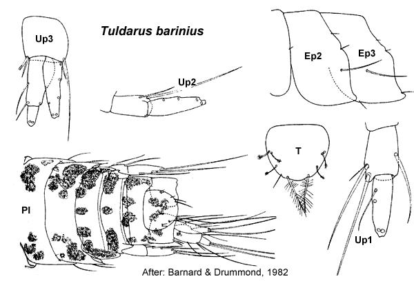

Tuldarus barinius Barnard & Drummond, 1982: 123, figs 46 (part)-48.
Type Material. Lodged in the NMV.
Type Locality. Western Port, Victoria, muddy sand, 9 m depth (CPBS 25S/5).
Description. Based on Barnard & Drummond, 1982: 123, figs 46 (part) –48.
Antenna 1 peduncular article 1 setal row absent; accessory flagellum 3 -articulate; primary flagellum 5–7 -articulate. Antenna 2 peduncular article 4 main setal row with only robust setae, proximal part of row evenly angled. Mandible right incisor simple; left incisor with 2 teeth. Maxilla 1 palp with apical group of setae only.
Gnathopod 1 simple; coxa small, anteroventrally curved, slightly larger than coxa 2. Gnathopod 2 minutely parachelate to subchelate, propodus palm transverse to slightly obtuse. Pereopod 3 coxa large, larger than coxa 4. Pereopod 4 coxa large, posteroventral lobe absent. Pereopod 5 basis without mediofacial brush of setae; dactylus without robust setae. Male pereonite 6 smooth. Pereopod 6 basis fully expanded; merus with few or no slender setae on posterior margin; dactylus well developed. Pereopod 7
coxa without long posterior spine; basis fully expanded, with slender
setae along posteroproximal margin; dactylus well developed, without
robust setae.
Epimeron 2 subequal in size to epimeron 3, posteroventral corner with small spine or subquadrate, both epimera with few or no setae. Epimeron 3 posteroventral corner with small spine. Uropod 1 inner ramus absent or vestigial, fused to peduncle. Uropod 2 inner ramus absent or vestigial, fused to peduncle. Telson subequal in length and breadth, entire.
Habitat. Muddy sand bottoms.
Distribution.Australia: Western Port, Victoria (Barnard & Drummond, 1982).

___________________________
This
publication should be cited as: Kilgallen, N.M. & Lowry, J.K. 2008.
Urohaustoriidae (Amphipoda): World Genera and Species. Version 1. 1
January 2008. http://crustacea.net.